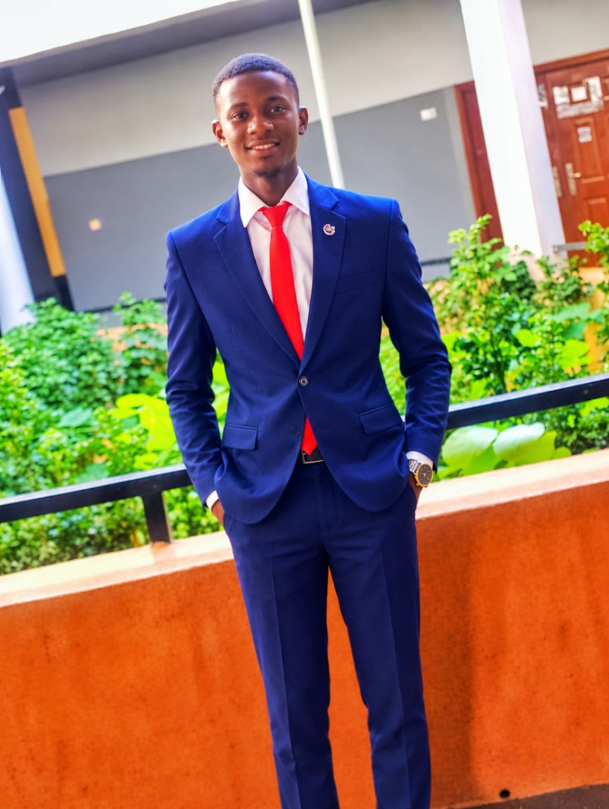
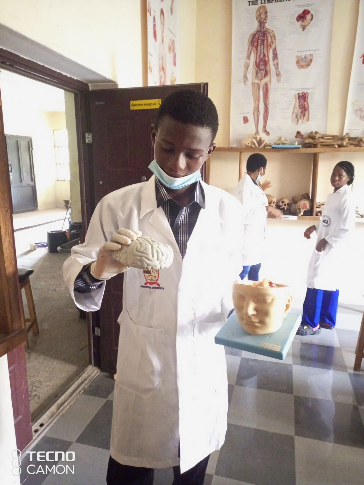

Emmanuel Ajanaku
I'm a physiology graduate interested in neuroscience, clinical research, sepsis and critical illness, and research that improves health outcomes. I bring together scientific curiosity, collaborative research, and community-focused leadership.


Science with purpose.
I graduated with a Bachelor of Science in Physiology from Ekiti State University, Nigeria, with Second Class Honours (Upper Division) and a CGPA of 4.30/5.00.
My academic and collaborative experiences have shaped my interest in understanding the nervous system and translating evidence into better clinical and population-health practice. I am especially interested in neuroscience, clinical research, sepsis and critical illness, and health services research.
Beyond research, I value service, integrity, curiosity, and practical impact. I have led student-led health initiatives and contributed to research and advocacy activities focused on improving health awareness and access.
Education
B.Sc. Physiology — Second Class Honours (Upper Division)
Ekiti State University (EKSU), Ado-Ekiti, Nigeria
CGPA: 4.30/5.00
Research interests and projects
Experiences that have strengthened my interest in scientific investigation, evidence synthesis, and clinically relevant research.
Sleep deprivation, gastric ulcer and intestinal glucose absorption
Undergraduate project investigating the impact of sleep deprivation on intestinal glucose absorption in gastric ulcer-induced Wistar rats, using experimental and biochemical approaches.
Publication DOI: 10.1186/s13104-026-07936-x ↗
Neurology workforce in Nigeria
Contributed to research and advocacy work examining the neurology workforce gap in Nigeria, with attention to epilepsy and stroke and the need to strengthen neurological care.
LifTING & Sepsis Canada Research Training Program
Research Collaborator in the 2026–2027 program, with interests spanning clinical, population health and health services research related to sepsis and critical illness.
Questions I hope to investigate
Neuroscience and brain health; clinical outcomes in sepsis and critical illness; evidence-informed care; health systems and access to neurological and critical care services.
Experience
President / Fellow — HEAL EKSU
Led student health advocacy and outreach activities, including malaria awareness, CPR education and preventive health engagement.
Founder & President — ILP
Founded and lead a student-focused initiative supporting learning, development and community engagement, reaching more than 1,000 people through its activities.
Medical Physiology Laboratory — SIWES
Gained practical exposure to routine laboratory procedures, including PCV, blood grouping, blood glucose testing, ECG interpretation, equipment handling and documentation.
SRHIN Neuroscience Research Group
Contributed to collaborative neuroscience-related research activities and work examining neurological care needs in Nigeria.
Awards & distinctions
Best Poster — FBMS International Conference
Faculty of Basic Medical Sciences, Ekiti State University.
Bioethics Essay Competition — Finalist
Selected among the top five finalists in the Utah State University IBE Bioethics Essay Competition.
LifTING & Sepsis Canada
Accepted as a Research Collaborator in the research training program.
Let's exchange ideas.
I welcome conversations about neuroscience, clinical research, sepsis and critical illness, research collaborations, and graduate research opportunities.
Before publishing, replace the email placeholder and LinkedIn link with your actual contact details. A CV download link can be added once your preferred CV PDF is ready.